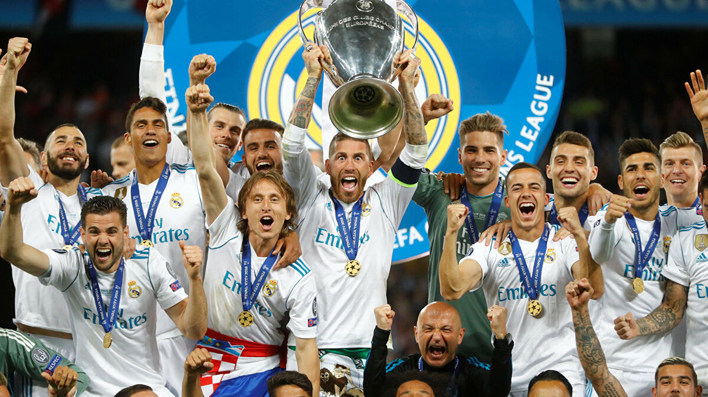
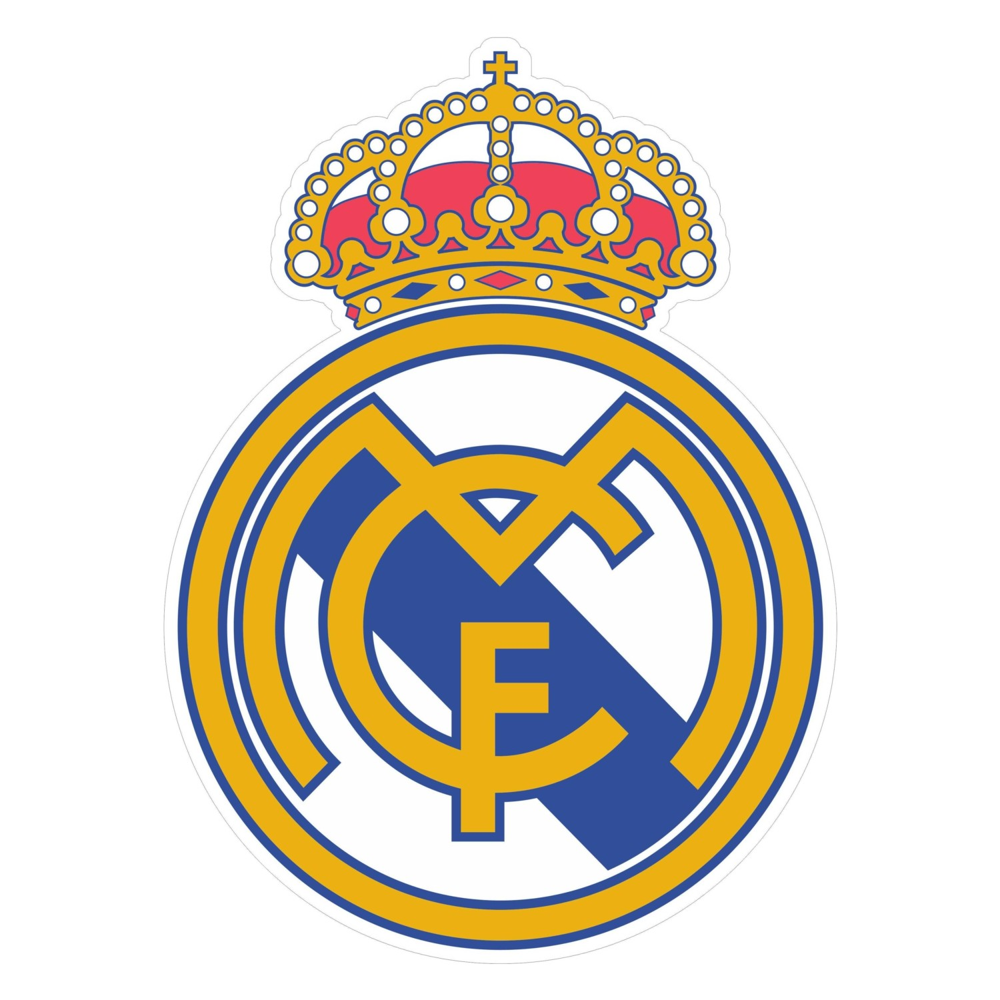

About Real Madrid CF
Welcome to Real Madrid Club de Futbol.
Real Madrid CF founded on 6 March 1902 as Madrid Football Club, the club has traditionally worn a white home kit since inception. The word real is Spanish for "royal" and was bestowed to the club by King Alfonso XIII in 1920 together with the royal crown in the emblem. The team has played its home matches in the 81,044-capacity Santiago Bernabéu Stadium in downtown Madrid since 1947. Unlike most European sporting entities, Real Madrid's members (socios) have owned and operated the club throughout its history.
The club was estimated to be worth €3.8 billion ($4.2 billion) in 2019, and it was the second highest-earning football club in the world, with an annual revenue of €757.3 million in 2019. The club is one of the most widely supported teams in the world. Real Madrid is one of three founding members of La Liga that have never been relegated from the top division since its inception in 1929, along with Athletic Bilbao and Barcelona. The club holds many long-standing rivalries, most notably El Clásico with Barcelona and El Derbi Madrileño with Atlético Madrid
Real Madrid established itself as a major force in both Spanish and European football during the 1950s, winning five consecutive European Cups and reaching the final seven times. This success was replicated in the league, which the club won five times in the space of seven years. This team, which included Alfredo Di Stéfano, Ferenc Puskás, Francisco Gento, and Raymond Kopa, is considered by some in the sport to be the greatest team of all time.
In domestic football, the club has won 66 trophies; a record 34 La Liga titles, 19 Copa del Rey, 11 Supercopa de España, a Copa Eva Duarte, and a Copa de la Liga. In European and worldwide competitions, Real Madrid have won a record 26 trophies; a record 13 European Cup/UEFA Champions League titles, two UEFA Cups and four UEFA Super Cups. In international football, they have achieved a record seven club world championships.
Real Madrid was recognised as the FIFA Club of the 20th Century on 11 December 2000 with 42.35% of the vote, and received the FIFA Centennial Order of Merit on 20 May 2004. The club was also awarded Best European Club of the 20th Century by the IFFHS on 11 May 2010. In June 2017, the team succeeded in becoming the first club to win consecutive Champions League titles, then made it three in a row and four in five seasons in May 2018, extending their lead atop the UEFA club rankings. As of 2020, Real Madrid are ranked third behind Bayern Munich and Barcelona.
It was under Florentino Pérez's first presidency (2000–2006) that Real Madrid started its ambition of becoming the world's richest professional football club. The club ceded part of its training grounds to the city of Madrid in 2001, and sold the rest to four corporations: Repsol YPF, Mutua Automovilística de Madrid, Sacyr Vallehermoso and OHL. The sale eradicated the club's debts, paving the way for it to buy the world's most expensive players, such as Zinedine Zidane, Luís Figo, Ronaldo and David Beckham. The city had previously rezoned the training grounds for development, a move which in turn increased their value, and then bought the site. The European Commission started an investigation into whether the city overpaid for the property, to be considered a form of state subsidy.
The sale of the training ground for office buildings cleared Real Madrid's debts of €270 million and enabled the club to embark upon an unprecedented spending spree which brought big-name players to the club. In addition, profit from the sale was spent on a state-of-the-art training complex on the city's outskirts.
Although Pérez's policy resulted in increased financial success from the exploitation of the club's high marketing potential around the world, especially in Asia, it came under increasing criticism for being too focused on marketing the Real Madrid brand and not enough on the performances of the team.
By September 2007, Real Madrid was considered the most valuable football brand in Europe by BBDO. In 2008, it was ranked the second-most valuable club in football, with a value of €951 million (£640 million / $1.285 billion), only beaten by Manchester United, which was valued at €1.333 billion (£900 million). In 2010, Real Madrid had the highest turnover in football worldwide. In September 2009, Real Madrid's management announced plans to open its own dedicated theme park by 2013.
During the 2009–10 season, Real Madrid made €150 million through ticket sales, which was the highest in top-flight football. The club has the highest number of shirt sales a season, around 1.5 million. For the 2010–11 season its wage bill totalled €169 million, which was second-highest in Europe behind Barcelona. However, its wage bill to turnover ratio was the best in Europe at 43 percent, ahead of Manchester United and Arsenal at 46 percent and 50 percent, respectively. In 2013, Forbes listed the club as the world's most valuable sports team, worth $3.3 billion. It was valued at €3.47 billion ($4.1 billion) in 2018, and in the 2016–17 season it was the second highest-earning football club in the world, with an annual revenue of €674.6 million. The second highest paid sports team in the world – after Barcelona – in November 2018 the average first-team pay at Real Madrid was £8.1m ($10.6m) per year.